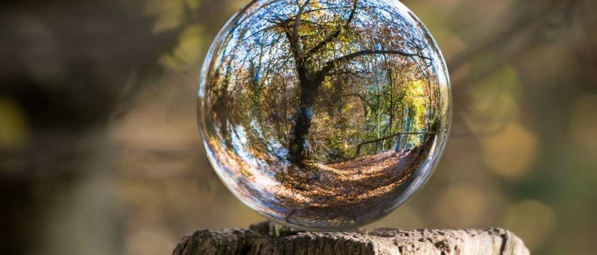

- Copy.png)
Menjaga Kesehatan Lingkungan
Menjaga kesehatan lingkungan merupakan hal yang harus dilakukan bagi setiap individu, kesehatan harus tetap terjaga agar keluarga kita terhindar dari penyakit, karena kesehatan itu tidak ternilai harganya,terkadang ketika kita sehat kita lupa nikmat tersebut dan ketika kita sakit barulah kita sadar betapa berharganya nikmat sehat itu.
Tubuh yang sehat dapat didapat dengan cara berolahraga secara teratur mengkonsumsi makanan bergizi, serta lingkungan yang sehat dan bersih. Lingkungan yang sehat terkadang tidak kita perhatikan karena kesibukan kita sehingga lingkungan jadi tidak dijaga kebersihannya, ini bisa menimbulkan adanya penyakit salah satunya adalah DBD (demam berdarah) ini sangat berbahaya karena bisa menyebabkan kematian, oleh karena itu kita semua wajib menjaga kebersihan lingkungan sekitar.
Adapun tujuan dan ruang lingkup kesehatan lingkungan adalah menjadikan lingkungan sekitar yang bersih dan terawat, juga bebas dari segala macam penyakit, bagaimana caranya? yaitu kita semua bisa melakukan:
-Koreksi atau perbaikan terhadap segala bahaya dan ancaman pada kesehatan manusia.
Memperbanyak tempat sampah di area sekitar lingkungan.
-Membuat jadwal kerja bakti untuk membersihkan lingkungan.
-Mendaur ulang sampah sehingga menjadi produk yang nantinya dapat dijual dan menjadi income pada masyarakat itu sendiri.
-Pelajari pembuatan kompos dan sampah organik agar bisa dimanfaatkan kembali menjadi pupuk.
Untuk itu mari kita biasakan melakukan kegiatan atau sesuatu hal yang baik dari sekarang. Tidak ada kata terlambat untuk sebuah kebaikan mulailah hidup sehat dari sekarang.